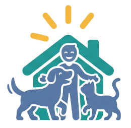

Messages
Talk to Harbor County AC about a placement. Applications you send from a profile show up here as their own conversation.

Not a wishlist — a fit. Describe your place the way you'd say it out loud. An AI reads it, works out what you can actually take, which animals clear every hard constraint, and exactly why. It shows every step of its reasoning.
The hard answers decide who you can take; the rest decide who you'd suit best. Anything the boxes can't capture goes in the notes at the end — the AI reads those too.
Talk to Harbor County AC about a placement. Applications you send from a profile show up here as their own conversation.
FosterMatch uses AI to match animals with foster homes · every animal, foster and response here is invented · reset from the shelter board
Photographs are stock images of real animals used as placeholders. They are not the animals described on this page, and none of the medical or behavioural notes here relate to the animals pictured. Sources: dog.ceo, TheCatAPI, and Wikimedia Commons. Hero footage “Goldendoodle and Black Lab puppies playing” by Tim Sweet, CC BY-SA 3.0.